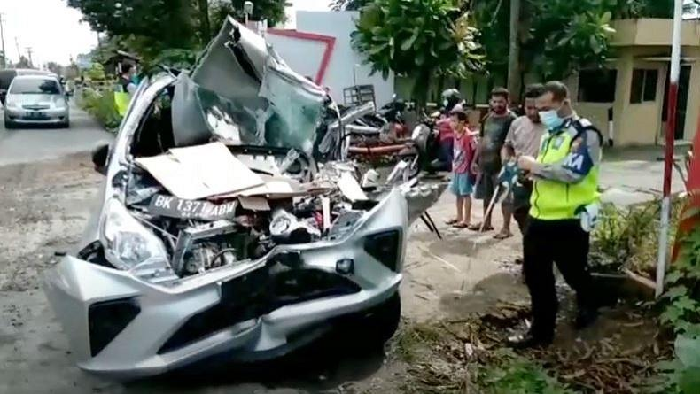
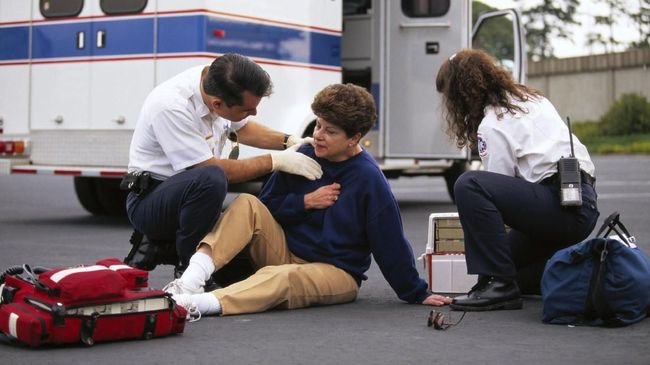
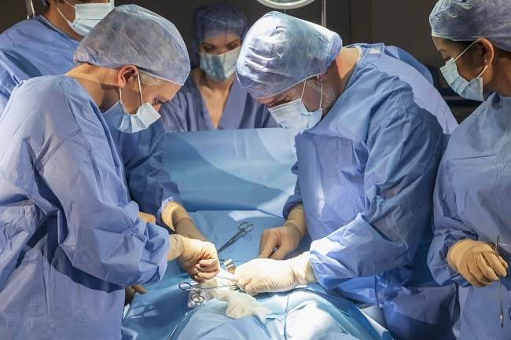

Penanganan Utama dan penyembuhan Pada Kecelakaan
Kecelakaan

Kecelakaan adalah cedera yang terjadi ketika bagian tubuh terhimpit dan mendapat tekanan kuat dari benda berat. Kecelakaan dapat menyebabkan memar, luka robek, patah tulang, dislokasi sendi, cedera saraf, hancur atau terpotongnya bagian tubuh tertentu, hingga perdarahan organ. Kecelakaan juga dapat mengakibatkan kelumpuhan permanen, bahkan kematian. Penanganan medis perlu segera dilakukan untuk mencegah terjadinya kerusakan lebih lanjut terhadap organ lain.
Penyebab Kecelakaan
Kecelakaan dapat disebabkan oleh beberapa faktor, yaitu:
- Kecelakaan kendaraan bermotor atau jenis transportasi lain, seperti kereta dan pesawat.
- Bencana alam, misalnya gempa bumi, tsunami, angin topan, atau tanah longsor.
- Kecelakaan kerja, terutama pekerja di industri pertambangan, konstruksi, dan pertanian yang tidak menggunakan alat pelindung diri saat bekerja.
- Perang (luka ledakan atau tembakan).
- Jatuhnya benda berat ke kaki atau terjepitnya jari tangan di pintu atau jendela.
cidera Pada Kecelakaan

Cedera yang menyebabkan kerusakan terhadap otot, tulang, dan organ tubuh tertentu ini dapat menimbulkan gejala berupa:
- Nyeri hebat
- Mati rasa di bagian tubuh yang mengalami cedera
- Luka terbuka yang menyebabkan rusaknya permukaan kulit dan perdarahan hebat
- Perubahan bentuk tubuh akibat patah tulang, hingga tulang yang mencuat ke luar menembus permukaan kulit
- Penurunan suhu tubuh (hipotermia)
- Kulit pucat, serta bibir dan jari membiru
- Penurunan kesadaran.
- Tekanan darah menurun.
- Sesak napas dan denyut nadi melemah.
Pertolongan Pertama Kecelakaan
Terdapat beberapa langkah pertolongan pertama yang dapat dilakukan bila menemukan korban Kecelakaan sebelum mendapat penanganan di rumah sakit, yaitu:
- Periksa tingkat kesadaran korban, apakah korban masih dapat merespons pertanyaan atau membuka matanya.
- Periksa denyut jantung dan kondisi pernapasan. Pastikan jalur pernapasan terbuka, yang ditandai dengan korban mampu berbicara, menangis, atau merintih. Korban dianggap dapat bernapas normal jika udara terdeteksi bergerak masuk dan keluar, yaitu dengan melihat dada atau perut yang bergerak naik-turun secara normal.
- Lakukan upaya untuk menenangkan korban. Tindakan ini dilakukan agar korban merasa aman dan tidak panik.
- Jika korban mengalami perdarahan, lakukan upaya untuk menghentikan perdarahan. Periksa dan deteksi sumber perdarahan, kemudian beri tekanan kuat pada area luka.
- Periksa kondisi kulit di sekitar area cedera untuk mendeteksi perubahan warna kulit yang pucat atau membiru akibat perdarahan di dalam.
- Jika perdarahan terus berlangsung dan mengancam nyawa korban, gunakan bebat dan perban untuk menutup sumber perdarahan.
- Jika bagian tubuh korban ada yang terpotong, lakukan tindakan untuk menghentikan perdarahan, kemudian bersihkan dan simpan bagian tubuh yang terputus ke dalam plastik, tutup rapat, dan letakkan di dalam wadah berisi es.
- Jika korban diduga mengalami dislokasi atau patah tulang, lakukan upaya agar korban tidak terlalu banyak bergerak atau buatlah bidai agar bagian tubuh yang patah tidak bergerak.
- Pastikan korban dalam posisi nyaman dan beri selimut agar korban tetap hangat.
- Pantau kondisi pernapasan dan tingkat kesadaran, serta dampingi korban hingga pertolongan medis tiba.
Penanganan Lanjutan Kecelakaan

Penanganan lanjutan dilakukan oleh dokter berdasarkan jenis cedera yang dialami korban. Cedera parah ini biasanya perlu ditangani oleh dokter ortopedi atau dokter ortopedi ahli traumatologi dan rekonstruksi.
Pemeriksaan fisik akan dilakukan untuk menentukan tingkat keparahan luka. Tes pencitraan juga dilakukan untuk melihat kondisi cedera pada jaringan dan organ bagian dalam. Jenis tes pencitraan yang digunakan, yaitu:
- Foto Rontgen, untuk mendeteksi retakan atau patahan pada tulang.
- CT scan, untuk memeriksa kondisi cedera dari berbagai sudut secara lebih detail.
- MRI, untuk memeriksa dan mendeteksi dampak cedera terhadap organ tubuh bagian dalam.
Setelah mengetahui tingkat keparahan cedera yang dialami pasien, dokter akan menentukan tindakan yang perlu diberikan, di antaranya:
- Terapi obat. Beberapa jenis obat akan diberikan oleh dokter sebagai langkah awal penanganan cedera. Sebagian besar obat akan diberikan melalui jalur suntik atau infus, antara lain:
- Obat pereda nyeri (analgesik), seperti ketamine, untuk meredakan nyeri akibat cedera yang dirasakan oleh pasien.
- Obat penenang atau sedatif, seperti benzodiazepine, untuk meredakan rasa cemas dan ketegangan otot pada pasien.
- Antibiotik, untuk mencegah terjadinya infeksi bakteri, khususnya pada luka terbuka.
- Operasi. Tindakan operasi dilakukan untuk mengendalikan perdarahan dan menangani cedera pada organ bagian dalam. Jenis operasi yang akan dilakukan tergantung pada lokasi cedera dan perdarahan, yaitu:
- Kraniotomi, untuk menangani perdarahan dan gangguan pada otak. Prosedur ini dilakukan dengan membuat dan mengangkat sebagian tulang tengkorak, sehingga dokter dapat melakukan tindakan terhadap otak.
- Laparotomi, yaitu prosedur operasi dengan membuat sayatan di dinding perut, sehingga dokter dapat memeriksa kondisi organ dalam perut dan mendeteksi perdarahan.
- Torakotomi, untuk menghentikan perdarahan dan meredakan tekanan pada area jantung dan paru. Prosedur torakotomi dilakukan dengan cara membuat sayatan di sepanjang tulang rusuk.
- Fasciotomy, yaitu prosedur operasi yang dilakukan dengan cara memotong lapisan pembungkus organ (fascia), untuk meredakan ketegangan atau tekanan pada otot dan saraf yang dapat mengakibatkan terganggunya sirkulasi darah ke daerah tersebut. Fasciotomy dilakukan untuk menyelamatkan organ tubuh dari kerusakan akibat sindrom kompartemen.
- Tindakan amputasi, yaitu pemotongan bagian tubuh tertentu untuk mencegah terjadinya kerusakan lebih lanjut atau komplikasi yang dapat mengancam nyawa. Amputasi dilakukan terhadap beberapa kondisi berikut:
- Jaringan tubuh membusuk atau mati dan berisiko menyebabkan infeksi pada bagian tubuh lainnya.
- Cedera berat, seperti luka akibat ledakan atau gigitan hewan.
- Infeksi parah dan tidak kunjung membaik, terutama jika korban menderita diabetes.
- Operasi berulang. Untuk kasus cedera yang parah, operasi perlu dilakukan secara berulang dan bertahap, untuk memperbaiki organ, otot, dan saraf secara keseluruhan.
Komplikasi Kecelakaan
Ada beberapa komplikasi yang mungkin terjadi jika Kecelakaan tidak segera ditangani, yaitu:
- Sindrom Crush atau sindrom Bywaters, yaitu kondisi medis yang ditandai dengan syok dan gagal ginjal akibat cedera serius pada otot rangka. Tekanan hebat akibat Kecelakaan menyebabkan pembengkakan otot pada bagian tubuh yang cedera dan mengakibatkan kerusakan jaringan sekitar, disfungsi organ, serta gangguan metabolisme.
- Sindrom kompartemen, terjadi bila jaringan otot dan sekitarnya tidak mendapatkan asupan darah dalam jangka waktu lama akibat meningkatnya tekanan dalam otot. Sindrom kompartemen menyebabkan rusaknya saraf dan kematian otot. Sindrom kompartemen ditandai dengan rasa nyeri hebat yang disertai dengan kesemutan, kemudian kelumpuhan. Tanda visual sindrom kompartemen adalah pembengkakan pada kulit.
 >
>